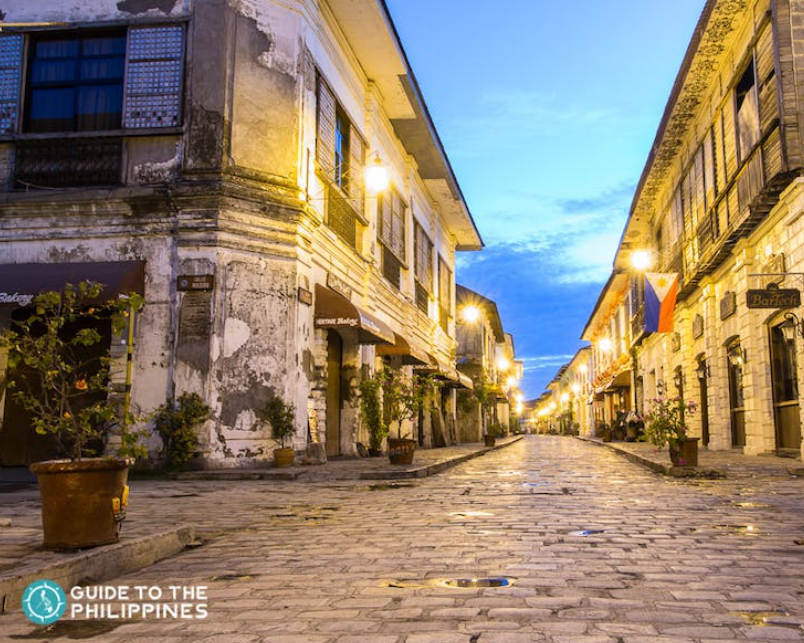
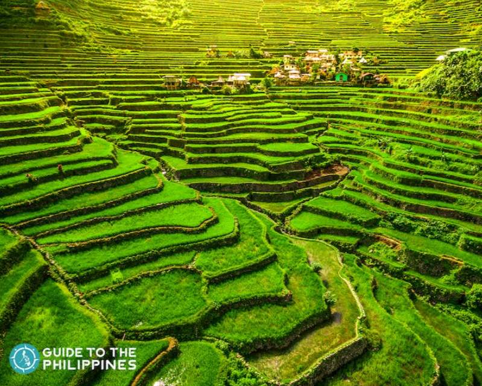

The topography of the Philippines is comprised of beautiful oceans, breaktaking mountains, and natural archepelagic structures that will amaze you. Each destination has its own story, and it is very exciting to learn about what is so unique about these locations.
Here are a few wonderful destinations which are a must to visit!
El Nido
- Explore lagoons and white-sandy beaches in El Nido. Situated in Palawan, El nido offers the option to island hop from one beautiful coast to another.
- This photo was taken in Nacpan Beach.

Ifugao
- Marvel at the breathtaking sight of the Banaue Rice Terraces. Chiseled by hand about 2000 years ago, these rice terraces continue to stand for generations to come.
- This photo was taken in the Banaue Rice Terraces.

Vigan
- This place should most definitely be in your bucket-list when you visit Ilocos! Take a trip as you explore this 16th-century town―a splendid UNESCO World Heritage Site.
- This photo was taken in Calle Crisologo.

Sources:
Visit this website to learn more!